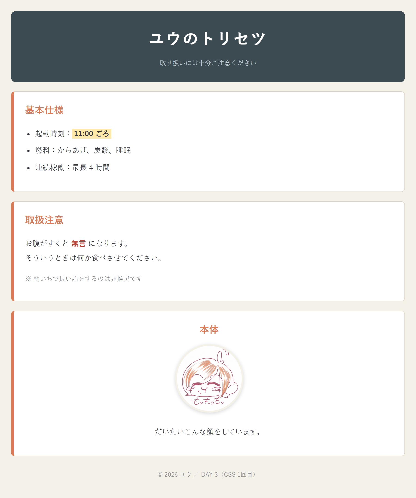

03
D A Y 3 / C S S
見た目を
手に入れる
HTMLは1文字も書き換えない。
CSSファイルを1枚足すだけで、別のページに見える。
第3回 ／ セレクタ・色・文字・余白・ボックスモデル

やっと色が塗れる。
今日のゴール
中身は同じ。着替えるだけ
BEFORE ── HTMLだけ

AFTER ── CSSを1枚足した

ここが CSS のすごいところ
HTMLはまったく同じ。別ファイルを差し替えるだけで、全ページの見た目が一斉に変わる。
100ページあっても、直すのは CSS 1枚。
C H A P T E R / 0 2
実習：style.css を書く
HTMLは触らない。
新しく1枚、CSSファイルを作る。

DAY 3 おわり
チェックリスト
- CSSファイルを作って link で読み込める
- タグ名・class・id の3つのセレクタが使い分けられる
- 色・文字・余白を変えられる
- margin と padding の違いが説明できる
- 効かないとき、確認する順番が言える
次回 DAY 4 ／ 並べる・動かす
Flexbox と Grid で横に並べる。
スマホ対応と、マウスを乗せたときのアニメーションも。見た目が急に良くなる回。
スマホ対応と、マウスを乗せたときのアニメーションも。見た目が急に良くなる回。
宿題（15分）
自分のページの色を3色決めてそろえる。
playground/css-lab.html でスライダーを触ってみるのもおすすめ。
playground/css-lab.html でスライダーを触ってみるのもおすすめ。